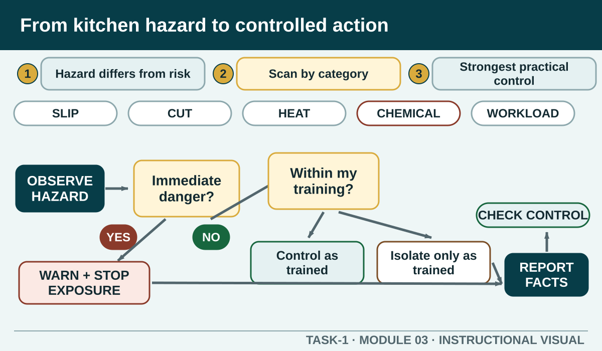

Prior learning
Recall the previous lesson and bring forward one question or completed learning artefact.
Task 1 · Lesson 3 of 16
Recognise common hospitality hazards, reason from hazard to effective control and choose an immediate response that stays within training and workplace authority.
Prior learning
Recall the previous lesson and bring forward one question or completed learning artefact.
Success criteria
Learning boundary
This lesson supports preparation and formative practice. The current authorised package and trainer/assessor control formal products, observations, dates and submission.

A hazard is something with the potential to cause harm. Risk considers what harm could occur, who might be exposed and how likely the event is under the current conditions. The same hazard can create different levels of risk when the task, people or environment changes.
For example, a knife is a normal kitchen tool and a potential cutting hazard. Risk increases if it is blunt, damaged, hidden in washing water, carried carelessly, used on an unstable board or handled by someone without the required training. Good WHS thinking describes the actual situation rather than labelling every item simply safe or unsafe.
A structured scan helps you notice more than the most obvious problem. Physical hazards include slips, cuts, burns, noise, unstable objects and manual tasks. Chemical hazards include cleaning products, vapours, leaks, unlabelled containers and incorrect mixing. Biological hazards can arise from food, waste, pests or people. Psychological hazards can include aggression, bullying, excessive pressure or fatigue-related demands.
Categories overlap. A spill may create a slip risk, expose a worker to a chemical and interrupt a busy service path. The response needs to control the whole situation, not just the easiest part to see.
The preferred approach is to remove the hazard when reasonably practicable. If it cannot be removed, reduce exposure using stronger controls before relying only on personal behaviour or protective equipment. In student kitchens, your role is often to recognise the problem, prevent access and report it so the authorised person can decide and implement the control.
A warning sign or pair of gloves may help, but neither repairs damaged equipment, replaces safe storage or removes an unsafe process. Ask what changes the source, separates people from it or makes the task safer by design. Then add procedures, training and PPE as required.
When you find a hazard, protect people from immediate exposure if you can do so safely. Warn nearby people, stop the affected task, keep the item or area from use and notify the responsible person. Isolation, tagging, clean-up, first aid or equipment shutdown must follow the training and procedure you have been given.
Do not improvise a repair, handle an unknown spill or continue an unsafe task because service is busy. Escalation is an active control: you have recognised that the situation needs skill, authority or resources beyond your role.
A useful hazard report identifies the exact location, what was observed, who or what could be affected, what immediate action was taken and who was notified. Avoid blaming language and do not guess a cause you did not observe. A clear verbal warning may be needed first, followed by the authorised record.
Near misses matter because they reveal a failed or weak control before serious harm occurs. Reporting them gives the workplace a chance to correct equipment, layout, instructions, supervision or workload rather than waiting for an injury.
A control is not finished when it is written down. Check whether it removed or reduced exposure, whether it introduced a different problem and whether people can follow it during real work. Controls also need review when equipment, products, staffing, layout or procedures change.
Students can contribute by observing and communicating: Is the isolated item still accessible? Is the spill path actually clear? Did the revised workflow move congestion elsewhere? The responsible person makes the formal decision, but accurate observations make that decision stronger.

External media loads only after you choose it.
Source-linked video
Watch for: List the hazards the café owner links to pace and workflow, then notice how communication and awareness operate as controls.
Formative practice
Each option explains the workplace consequence. These responses save on this device.
Written application
Use observable facts, explain the consequence and keep local assessment or procedure details with the authorised source.
Self-checkApply and keep evidence
Distinguish a source of harm from its possible consequence and the action used to eliminate or minimise exposure.
Use the check result, activity record and written response as formative learning evidence only. Formal evidence remains controlled by the current package and trainer/assessor.
Next: Presentation and PPE.
Authorised source note: Source basis: authorised Cycle 1 WHS and hazard content, Protecting Yourself and Others, authorised hazard resources and current SafeWork NSW guidance. Local emergency and reporting procedures remain Teacher to confirm.